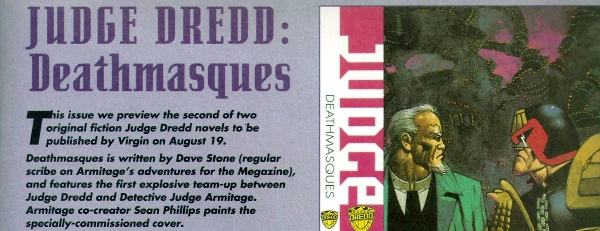

Excerpt promos for fiction novels.
Art by Sean Phillips
| Title | Parts | Pages | w indicates a wraparound coverCovers | Year(s) | Issues | Writer | Artist | Colourist | Letterer |
|---|---|---|---|---|---|---|---|---|---|
| Judge Dredd: The Savage Amusement | 1 | 2 | 0 | 1993 | M2.34 | David Bishop | [cover image] | <-- | n/a |
| Judge Dredd: Deathmasques | 1 | 2 | 0 | 1993 | M2.35 | David Stone | [cover image] | <-- | n/a |
| Judge Dredd: Dreddlocked | 1 | 2 | 0 | 1993 | M2.39 | Stephen Marley | [cover image] | <-- | n/a |
| Judge Dredd: Cursed Earth Asylum | 1 | 2 | 0 | 1993 | M2.43 | David Bishop | [cover image] | <-- | n/a |
| Judge Dredd: The Medusa Seed | 1 | 2 | 0 | 1994 | M2.46 | David Stone | [cover image] | <-- | n/a |
| Judge Dredd: Dread Dominion | 1 | 1 | 0 | 1994 | M2.53 | Stephen Marley | [cover image] | <-- | n/a |
| Judge Dredd: The Hundredfold Problem | 1 | 2 | 0 | 1994 | M2.59 | John Grant | [cover image] | <-- | n/a |
| Judge Dredd: Silencer | 1 | 2 | 0 | 1994 | M2.67 | David Bishop | [cover image] | <-- | n/a |
| Judge Dredd: Wetworks | 1 | 2 | 0 | 1995 | M2.74 | Dave Stone | [cover image] | <-- | n/a |
| year | episodes | pages |
| 1984 | 0 | 0 |
| 1985 | 0 | 0 |
| 1986 | 0 | 0 |
| 1987 | 0 | 0 |
| 1988 | 0 | 0 |
| 1989 | 0 | 0 |
| 1990 | 0 | 0 |
| 1991 | 0 | 0 |
| 1992 | 0 | 0 |
| 1993 | 4 | 8 |
| 1994 | 4 | 7 |
| 1995 | 1 | 2 |
| 1996 | 0 | 0 |
| 1997 | 0 | 0 |
| 1998 | 0 | 0 |
| 1999 | 0 | 0 |
| 2000 | 0 | 0 |
| 2001 | 0 | 0 |
| 2002 | 0 | 0 |
| 2003 | 0 | 0 |
| 2004 | 0 | 0 |